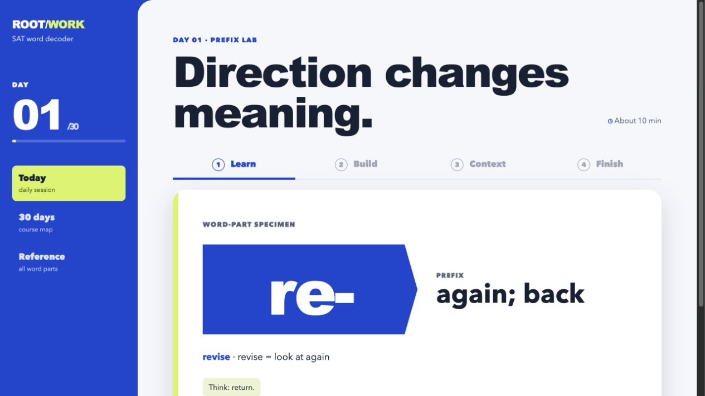

I design websites, tools, and systems that make complicated things clearer.
I work from the real point of confusion: what a visitor needs to understand, what an owner needs to control, or where a system needs to stop and ask for help.
Each record keeps the situation, my responsibility, the decisions, the artifact, and the current state separate. The evidence is intentionally more specific than the presentation.
Visitors can need help finding their way; this is an observation, not proof of how often it happens.
Role
Connor: concept, product, interaction, implementation, safety, and validation.
Decisions
Known QR checkpoints instead of GPS; accessibility as routing; human-help fallback; stop rather than guess; synthetic-only and institution-owned if ever adopted.
Built
Runnable browser demo with routing, written directions, safe failure, and scenarios.
Status
Discussion/demo only — not approved, installed, or Queen’s guidance.

02 / Rootwork
A static list is not a study system.
Problem
Vocabulary lists offer definitions but little support for making a reasoned meaning under time pressure.
Role
Product, curriculum, interface, and implementation.
Decisions
Predict before reveal; roots as a semantic neighborhood; context overrules; 30 short sessions; spaced review; local progress; mobile reference.
Built
30-day trainer.
Status
Working local study tool.
03 / Absurdly Rational
Give varied work a clear home.
Problem
Physician writing, podcasts, and humor needed a clear home and a safer way to edit.
Role
Information architecture, visual design, static build, and editor workflow.
Decisions
Topic and format first; original links stay visible; structured JSON; protected editor/review path.
Built
Jekyll site, content validation, and editor workflow.
Status
Published and maintained.
04 / 7Gradi Gelato
Make the next visit easy on a phone.
Problem
Rotating flavors, hours, and location are the decisions a visitor needs before leaving the house.
Role
Unsolicited concept design and build — never client work.
Decisions
One schedule source; flavor lineup; Instagram and directions; LocalBusiness schema.
Built
Responsive concept.
Status
Unsolicited, uncommissioned, and unapproved. No outcomes claimed.
Live field / eb2fb559
05 / Seeded Identity
One flexible identity, two routes.
Problem
A portfolio and service page need to feel connected without pretending they have the same audience.
I like work that does not ask people to become experts before it helps them. Sometimes that means making a business legible in one screen. Sometimes it means building a study loop or designing a system that refuses to turn uncertainty into confidence. I care about what people can actually understand and do next.
Contact details are being finalized.
Until production contact details are ready, this portfolio does not publish a placeholder email, phone number, or contact link.